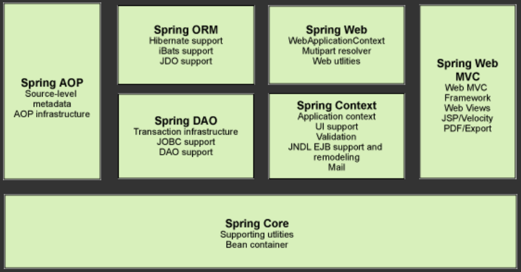

1、spring 1.1、简介
spring:春天—→给软件按行业带来了春天
2002,首次推出Spring雏形：interface21框架！
Spring框架即以interface21框架为基础，经过重新设计，并不断丰富其内涵，于2004年3月24号发布1.0版本
Rod Johnson,framework创始人，音乐博士
Spring理念：使现有技术更加容易使用，本身是个大杂烩，整合了现有的技术框架。
官网：https://docs.spring.io/spring-framework/docs/current/reference/html/overview.html#overview
官方Github地址：https://github.com/spring-projects/spring-framework
maven-spring:
我们导入spring-webmvc后，他会导入其他很多，除了spring-webmvc，可能还需要jdbc
1 2 3 4 5 6 7 8 9 10 11 12 13 <!-- https: <dependency> <groupId>org.springframework</groupId> <artifactId>spring-webmvc</artifactId> <version>5.3 .9 </version> </dependency> <!-- https: <dependency> <groupId>org.springframework</groupId> <artifactId>spring-jdbc</artifactId> <version>5.3 .9 </version> </dependency>
1.2、优点
开源的免费框架
轻量级、非入侵式的框架
控制反转(IOC)、面向切面(AOP)
支持事务的处理、支持声明式事务
对框架整合的支持
总结一句话：Spring就是一个轻量级非入侵的控制反转(IOC)和面向切面(AOP)编程的框架
1.3、组成 
7大部分组成：
core：核心
aop：
orm：
dao：dao层
web：
web mvc：
context：对ui界面等支持
1.4、扩展 现代化的java开发。
构建一切(springboot)、协调一切(springcloud)、连接一切(spring data flow)
springboot：快速开发的脚手架；可以快速开发微服务，约定大于配置。
springcloud：基于springboot实现的，微服务的整合。
弊端：spring发展太久后，违背了原来的理念！配置十分繁琐，人称配置地狱。直到springboot
2、IOC 2.1、理论推导 原来的步骤：
1.UserDao接口
1 2 3 4 5 package com.kuang.dao; public interface UserDao { public void getUser(); }
2.UserDaoImpl实现类
1 2 3 4 5 6 7 8 9 10 11 12 13 14 15 16 17 package com.kuang.dao; public class UserDaoImpl implements UserDao @Override public void getUser ( System.out.println("获取用户数据" ); } } package com.kuang.dao; public class UserDaoMysqlImpl implements UserDao @Override public void getUser ( System.out.println("UserDaoMysql" ); } }
3.UserService业务接口
1 2 3 4 5 6 7 8 9 package com.kuang.service; import com.kuang.dao.UserDao;public interface UserService { void getUser(); void setUserDao(UserDao userDao); }
4.UserServiceImpl业务实现类
1 2 3 4 5 6 7 8 9 10 11 12 13 14 15 16 17 18 19 20 21 22 23 package com.kuang.service; import com.kuang.dao.UserDao;import com.kuang.dao.UserDaoImpl;import com.kuang.dao.UserDaoMysqlImpl;public class UserServiceImpl implements UserService private UserDao userDao; @Override public void setUserDao (UserDao userDao ) this .userDao = userDao; } @Override public void getUser ( userDao.getUser(); } }
5.Client
1 2 3 4 5 6 7 8 9 10 11 12 13 14 15 16 import com.kuang.dao.UserDaoMysqlImpl;import com.kuang.service.UserService;import com.kuang.service.UserServiceImpl;public class MyTest public static void main (String [] args UserService userService = new UserServiceImpl(); userService.setUserDao(new UserDaoMysqlImpl()); userService.getUser(); } }
这样做的时候，我们写一下看出现什么问题，创建spring-study。
在我们之前的业务中，用户的需求可能会影响我们原来的代码，我们需要更具需求去修改源代码！如果代码量大，修改一次的成本代价十分昂贵。
我们使用了Set接口实现，发生了革命性的变化！
1 2 3 4 5 6 7 private UserDao userDao; @Override public void setUserDao (UserDao userDao ) this .userDao = userDao; }
之前，程序是主动性创建对象！控制权在程序员手上！
使用了Set之后，程序不再具有主动性，而是变成了被动的接受对象！
现在我们的程序由主动创建对象，通过set方式编程被动接收对象去操作，这就叫控制反转。
这种思想，从本质想解决了问题，我们程序员不再去管理对象的创建了。系统的耦合性大大降低，可以更加专注在业务的实现上。(当增加新东西后，给客户端，我们程序的架构不用变)，这是IOC原型！
https://blog.csdn.net/qq_33369905/article/details/106647330?ops_request_misc=%7B%22request%5Fid%22%3A%22162908447416780269868479%22%2C%22scm%22%3A%2220140713.130102334.pc%5Fblog.%22%7D&request_id=162908447416780269868479&biz_id=0&spm=1018.2226.3001.4450
早期：
现在：
2.2、本质 控制反转IoC(Inversion of Control)，是一种设计思想，DI(依赖注入)是实现IoC的一种方式 ，也有人认为DI只是IoC的另一种说法。没有IoC 的程序中 , 我们使用面向对象编程 , 对象的创建与对象间的依赖 关系完全硬编码在程序中 ，对象的创建由程序自己控制；控制反转后 将对象的创建转移给第三方 ，个人认为所谓控制反转就是：获得依赖对象的方式反转了 。
图1：早些时候我们想能在4轮子之间增加个中间件，调用中间件就可以了。于是乎图2 IOC容器诞生了。然后就是用户想要调谁就调谁。
IoC是Spring框架的核心内容 ，使用多种方式完美的实现了IoC，可以使用XML配置，也可以使用注解，新版本的Spring也可以零配置实现IoC。
Spring容器在初始化时先读取配置文件，根据配置文件或元数据创建与组织对象存入容器中，程序使用时再从Ioc容器中取出需要的对象。
采用XML方式配置Bean的时候，Bean的定义信息是和实现分离的，而采用注解的方式可以把两者合为一体，Bean的定义信息直接以注解的形式定义在实现类中，从而达到了零配置的目的。
控制反转是一种通过描述（XML或注解）并通过第三方去生产或获取特定对象的方式。在Spring中实现控制反转的是IoC容器，其实现方法是依赖注入（Dependency Injection,DI）。
3、HelloSpring 1 2 3 4 5 6 7 8 9 10 11 12 13 14 15 16 17 18 19 20 21 22 package com.kuang.pojo; public class Hello private String name; public String getName ( return name; } public void setName (String name this .name = name; } public void show ( System.out.println("Hello{" + "name='" + name + '\'' + '}' ); } }
1 2 3 4 5 6 7 8 9 10 11 12 13 14 15 16 17 18 19 20 21 <?xml version="1.0" encoding="UTF-8" ?> <beans xmlns="http://www.springframework.org/schema/beans" xmlns:xsi="http://www.w3.org/2001/XMLSchema-instance" xsi:schemaLocation="http://www.springframework.org/schema/beans https://www.springframework.org/schema/beans/spring-beans.xsd" > <!-- 使用Spring创建对象,在Spring中这些都成为bean bean = 对象 new Hello(); 类型 变量名 = new 类型(); Hello hello = new Hello(); id = 变量名 class new 的对象全路径 property 相当于给对象中的属性设置一个值 --> <bean id="hello" class "com.kuang.pojo.Hello" > <property name="name" value="Spring" /> </bean> </beans>
1 2 3 4 5 6 7 8 9 10 11 12 13 import com.kuang.pojo.Hello;import org.springframework.context.ApplicationContext;import org.springframework.context.support.ClassPathXmlApplicationContext;public class MyTest public static void main (String [] args ApplicationContext context = new ClassPathXmlApplicationContext("beans.xml" ); Hello hello = (Hello) context.getBean("hello" ); hello.show(); } }
思考问题:
Hello对象是谁创建的？
hello对象是怎么创建的？
这个过程叫控制反转！
反转：程序本身不创建对象，变成被动的接受对象
依赖注入：就是利用set方法注入的
IOC是一种编程思想，由主动编程编程被动的接收
可以通过ClassPathXmlApplicationContext去浏览一下底层的源码。
创建bean有很多种：注解、xml、文件
OK，到了现在，我们彻底不用在程序中改动了，要实现不同的操作，只需要在xml配置文件中进行修改，所谓的ioc，一句话：对象由Spring来创建，管理，装配。
4、IOC对象创建方式 1 2 3 4 5 6 7 8 9 10 11 12 13 14 15 16 17 18 19 20 21 22 23 24 25 26 package com.kuang.pojo; public class User private String name; public User ( System.out.println("User的无参构造" ); } public User (String name this .name = name; } public String getName ( return name; } public void setName (String name this .name = name; } public void show ( System.out.println("name=" + name); } }
1.使用无参构造创建对象(默认实现)
1 2 3 <bean id="user" class "com.kuang.pojo.User" > <property name="name" value="admin" /> </bean>
2.使用有参构造时
1 2 3 4 5 6 7 8 9 10 11 12 13 14 15 1. <!-- 下标赋值 --> <bean id="user" class "com.kuang.pojo.User" > <constructor -arg index ="0" value ="admin "/> </bean > 2. <!-- 不建议使用 --> <bean id ="user " class ="com .kuang .pojo .User "> <constructor -arg type ="java .lang .String " value ="admin "/> </bean > 3. <!-- 通过参数名赋值 --> <bean id ="user3 " class ="com .kuang .pojo .User "> <constructor -arg name ="name " value ="admin "/> </bean >
3.无论用不用bean都会被实例化
总结：在配置文件加载的时候，容器中管理的对象就已经初始化了！默认单例
5、Spring配置 3.1、别名 1 2 <!-- 别名 --> <alias name="user1" alias="user" />
3.2、Bean的配置 1 2 3 4 5 6 7 8 9 <!-- id:bean的唯一标识符 class:bean对象对应的全限定名：包名+类型 name:也是别名，而且可以起多个 --> <bean id="us" name="use,use2 use3;use4" class "com.kuang.pojo.User" scope="prototype" > <description>User</description> <property name="name" value="kuang" /> </bean>
3.3、Import 一般用于团队开发使用，将多个文件导入合并为一个applicationContext.xml
1 2 3 4 5 6 7 8 9 <?xml version="1.0" encoding="UTF-8" ?> <beans xmlns="http://www.springframework.org/schema/beans" xmlns:xsi="http://www.w3.org/2001/XMLSchema-instance" xsi:schemaLocation="http://www.springframework.org/schema/beans https://www.springframework.org/schema/beans/spring-beans.xsd" > <import resource="beans.xml" /> </beans>
内容相同也会被合并
6、DI依赖注入 https://docs.spring.io/spring-framework/docs/current/reference/html/core.html#beans-dependencies
https://docs.spring.io/spring-framework/docs/current/reference/html/core.html#beans-collection-elements
6.1、构造器注入 。。。
6.2、Set方式注入
依赖注入：Set注入！
依赖：bean对象的创建依赖于容器
注入：bean对象的所有属性，由容器来注入
【环境搭建】：
1.复杂类型
Address.java
1 2 3 4 5 6 7 8 9 10 11 12 13 14 15 16 17 18 19 20 21 22 23 package com.kuang.pojo; public class Address private String address; public String getAddress ( return address; } public void setAddress (String address this .address = address; } @Override public String toString ( return "Address{" + "address='" + address + '\'' + '}' ; } }
Student.java
1 2 3 4 5 6 7 8 9 10 11 12 13 14 15 16 17 18 19 20 21 22 23 24 25 26 27 28 29 30 31 32 33 34 35 36 37 38 39 40 41 42 43 44 45 46 47 48 49 50 51 52 53 54 55 56 57 58 59 60 61 62 63 64 65 66 67 68 69 70 71 72 73 74 75 76 77 78 79 80 81 82 83 84 85 86 87 88 89 90 91 92 93 94 95 96 package com.kuang.pojo; import java.util.*;public class Student private String name; private Address address; private String [] books; private List<String > hobbys; private Map <String ,String > card; private Set <String > games; private Properties info; private String wife; public String getName ( return name; } public void setName (String name this .name = name; } public Address getAddress ( return address; } public void setAddress (Address address ) this .address = address; } public String [] getBooks ( return books; } public void setBooks (String [] books this .books = books; } public List<String > getHobbys ( return hobbys; } public void setHobbys (List<String > hobbys ) this .hobbys = hobbys; } public Map <String , String > getCard ( return card; } public void setCard (Map <String , String > card this .card = card; } public Set <String > getGames ( return games; } public void setGames (Set <String > games this .games = games; } public Properties getInfo ( return info; } public void setInfo (Properties info ) this .info = info; } public String getWife ( return wife; } public void setWife (String wife this .wife = wife; } @Override public String toString ( return "Student{" + "name='" + name + '\'' + ", address=" + address.toString() + ", books=" + Arrays.toString(books) + ", hobbys=" + hobbys + ", card=" + card + ", games=" + games + ", info=" + info + ", wife='" + wife + '\'' + '}' ; } }
beans.xml
1 2 3 4 5 6 7 8 9 10 11 12 13 14 15 16 17 18 19 20 21 22 23 24 25 26 27 28 29 30 31 32 33 34 35 36 37 38 39 40 41 42 43 44 45 46 47 48 49 50 51 52 53 54 55 56 57 58 59 60 61 62 63 64 65 66 67 68 69 70 71 <?xml version="1.0" encoding="UTF-8" ?> <beans xmlns="http://www.springframework.org/schema/beans" xmlns:xsi="http://www.w3.org/2001/XMLSchema-instance" xsi:schemaLocation="http://www.springframework.org/schema/beans https://www.springframework.org/schema/beans/spring-beans.xsd" > <bean id="address" class "com.kuang.pojo.Address" > <property name="address" value="address" /> </bean> <bean id="student" class "com.kuang.pojo.Student" > <!--第一种，普通值的注入，value--> <!--<property name ="name" value ="kuang" /> <property name="name" > <value>kuang</value> </property> <!--第二种，bean注入，ref--> <property name="address" ref="address" /> <!--第三种，数组注入--> <property name="books" > <array> <value>红楼梦</value> <value>西游戏</value> <value>三国演义</value> <value>水浒传</value> </array> </property> <!--第四种，list注入--> <property name="hobbys" > <list> <value>听歌</value> <value>代码</value> <value>电影</value> </list> </property> <!--第五种，map注入--> <property name="card" > <map> <entry key="身份证" value="123" /> <entry key="银行卡" value="456" /> </map> </property> <!--第六种，set注入--> <property name="games" > <set> <value>VC</value> <value>LOL</value> </set> </property> <!--第七种，null 注入--> <property name="wife" > <null /> </property> <!--第八种，props注入--> <property name="info" > <props> <prop key="学号" >001 </prop> <prop key="邮箱" >123456 @qq.com</prop> </props> </property> </bean> </beans>
2.真实测试
1 2 3 4 5 6 7 8 9 10 11 12 13 14 import com.kuang.pojo.Student;import org.springframework.context.ApplicationContext;import org.springframework.context.support.ClassPathXmlApplicationContext;public class MyTest public static void main (String [] args ApplicationContext context = new ClassPathXmlApplicationContext("beans.xml" ); Student student = (Student) context.getBean("student" ); System.out.println(student.toString()); } }
6.3、拓展方式注入 我们可以使用p和c命名空间进行注入。
注意：p命名和c命名不知直接使用需要导入约束。
1 2 3 4 5 6 7 8 <beans xmlns="http://www.springframework.org/schema/beans" xmlns:xsi="http://www.w3.org/2001/XMLSchema-instance" xmlns:c="http://www.springframework.org/schema/c" xmlns:p="http://www.springframework.org/schema/p" xsi:schemaLocation="http://www.springframework.org/schema/beans https://www.springframework.org/schema/beans/spring-beans.xsd" > ... </beans>
1、p命名空间注入: https://docs.spring.io/spring-framework/docs/current/reference/html/core.html#beans-p-namespace
例子：
User.java
1 2 3 4 5 6 7 8 9 10 11 12 13 14 15 16 17 18 19 20 21 22 23 24 25 26 27 28 29 30 package com.kuang.pojo; public class User private String name; private int age; public String getName ( return name; } public void setName (String name this .name = name; } public int getAge ( return age; } public void setAge (int age ) this .age = age; } @Override public String toString ( return "User{" + "name='" + name + '\'' + ", age=" + age + '}' ; } }
userbeans.xml
1 2 3 4 5 6 7 8 9 10 11 12 13 14 15 16 <beans xmlns="http://www.springframework.org/schema/beans" xmlns:xsi="http://www.w3.org/2001/XMLSchema-instance" xmlns:p="http://www.springframework.org/schema/p" xsi:schemaLocation="http://www.springframework.org/schema/beans https://www.springframework.org/schema/beans/spring-beans.xsd" > <bean name="user" class "com.kuang.pojo.User" > <property name="name" value="someone" /> <property name="age" value="123" /> </bean> <!--p命名空间,可以注入属性的值，property,通过set注入--> <bean name="p-user" class "com.kuang.pojo.User" p:name="someone" p:age="123" /> </beans>
测试：
1 2 3 4 5 6 @Test public void test ( ApplicationContext context = new ClassPathXmlApplicationContext("userbeans.xml" ); User student = context.getBean("p-user" ,User.class); System.out.println(student.toString()); }
2、c命名空间注入: https://docs.spring.io/spring-framework/docs/current/reference/html/core.html#beans-c-namespace
例子：
User.java-增加有参构造
1 2 3 4 5 6 7 8 9 10 11 12 13 14 15 16 17 18 19 20 21 22 23 24 25 26 27 28 29 30 31 32 33 34 35 36 37 38 package com.kuang.pojo; public class User private String name; private int age; public String getName ( return name; } public void setName (String name this .name = name; } public User ( } public User (String name, int age this .name = name; this .age = age; } public int getAge ( return age; } public void setAge (int age ) this .age = age; } @Override public String toString ( return "User{" + "name='" + name + '\'' + ", age=" + age + '}' ; } }
cuserbeans.xml
1 2 3 4 5 6 7 8 9 10 11 12 13 14 15 16 <beans xmlns="http://www.springframework.org/schema/beans" xmlns:xsi="http://www.w3.org/2001/XMLSchema-instance" xmlns:c="http://www.springframework.org/schema/c" xsi:schemaLocation="http://www.springframework.org/schema/beans https://www.springframework.org/schema/beans/spring-beans.xsd" > <bean name="user" class "com.kuang.pojo.User" > <property name="name" value="someone" /> <property name="age" value="123" /> </bean> <!--c命名空间,可以注入属性的值,construct,通过构造器注入--> <bean name="p-user" class "com.kuang.pojo.User" c:name="someone" c:age="123" c:_0="someone" c:_1="123" /> </beans>
测试:
1 2 3 4 5 6 @Test public void test2 ( ApplicationContext context = new ClassPathXmlApplicationContext("cuserbeans.xml" ); User student = context.getBean("c-user" ,User.class); System.out.println(student.toString()); }
6.4、Bean作用域 https://docs.spring.io/spring-framework/docs/current/reference/html/core.html#beans-factory-scopes
作用域分类
1、单例模式(默认)
1 2 <bean name="c-user" class "com.kuang.pojo.User" c:name="someone" c:age="123" c:_0="someone" c:_1="123" scope="singleton" />
有时候并发情况下会产生延迟或不一致。
2、原型模式：每次从容器中get的时候都会产生一个新的对象！
1 2 <bean name="c-user" class "com.kuang.pojo.User" c:name="someone" c:age="123" c:_0="someone" c:_1="123" scope="prototype" />
多线程时好用，但是浪费资源，尽量单例
3、其余的request、session、application，只有在webmvc时用。
7、Bean的自动装配 官方没讲
现在默认是手动装配。
自动装配是Spring满足Bean依赖的一种方式。
Spring会在上下文中自动寻找，并自动装配属性。
有三种：
1.在xml中显示配置：
2.在java中显示配置【后面讲】：
3.隐式的装配【重要】：
7.1、测试 1、环境：一个人有两个宠物！
people
1 2 3 4 5 6 7 8 9 10 11 12 13 14 15 16 17 18 19 20 21 22 23 24 25 26 27 28 29 30 31 package com.kuang.pojo; public class People private Cat cat; private Dog dog; private String name; public Cat getCat ( return cat; } public void setCat (Cat cat ) this .cat = cat; } public Dog getDog ( return dog; } public void setDog (Dog dog ) this .dog = dog; } public String getName ( return name; } public void setName (String name this .name = name; } }
dog
1 2 3 4 5 6 7 package com.kuang.pojo; public class Dog public void shout ( System.out.println("旺旺" ); } }
cat
1 2 3 4 5 6 7 package com.kuang.pojo; public class Cat public void shout ( System.out.println("喵喵" ); } }
beans.xml
1 2 3 4 5 6 7 8 9 10 11 12 13 14 15 16 17 18 19 <?xml version="1.0" encoding="UTF-8" ?> <beans xmlns="http://www.springframework.org/schema/beans" xmlns:xsi="http://www.w3.org/2001/XMLSchema-instance" xsi:schemaLocation="http://www.springframework.org/schema/beans https://www.springframework.org/schema/beans/spring-beans.xsd" > <bean id="cat" class "com.kuang.pojo.Cat" > </bean> <bean id="dog" class "com.kuang.pojo.Dog" > </bean> <bean id="people" class "com.kuang.pojo.People" > <property name="cat" ref="cat" /> <property name="dog" ref="dog" /> <property name="name" value="狂神" /> </bean> </beans>
7.2、ByName自动装配 beans.xml
1 2 3 4 5 6 <bean id="dog2" class "com.kuang.pojo.Dog" ></bean> <!--byName会自动查在容器上下文中查找，和自己对象set方法后面的值对应的beanid--> <bean id="people" class "com.kuang.pojo.People" autowire="byName" > <property name="name" value="狂神" /> </bean>
people
1 2 3 public void setDog2 (Dog dog ) this .dog = dog; }
7.3、ByType自动装配
beans.xml
1 2 3 4 <!--byType会自动查在容器上下文中查找，和自己对象对象属性类型相同的bean--> <bean id="people" class "com.kuang.pojo.People" autowire="byType" > <property name="name" value="狂神" /> </bean>
假如有2个bean相同类型直接报错。弊端：必须保证这个bean类型全局唯一才可以。
好处：id可以省略
7.4、使用注解实现自动装配 https://docs.spring.io/spring-framework/docs/current/reference/html/core.html#beans-autowired-annotation
jdk1.5支持注解
Spring2.5开始支持注解
要使用注解须知：
1.导入约束: xmlns:context
2.配置注解的支持:context:annotation-config/ 【重点】
3.
1 2 3 4 5 6 7 8 9 10 11 12 13 <?xml version="1.0" encoding="UTF-8" ?> <beans xmlns="http://www.springframework.org/schema/beans" xmlns:xsi="http://www.w3.org/2001/XMLSchema-instance" xmlns:context="http://www.springframework.org/schema/context" xsi:schemaLocation="http://www.springframework.org/schema/beans https://www.springframework.org/schema/beans/spring-beans.xsd http://www.springframework.org/schema/context https://www.springframework.org/schema/context/spring-context.xsd" > <!--开启注解支持--> <context:annotation-config/> </beans>
1、@Autowired 直接在属性上即可
set方法上也可以
使用Autowired可以不用编写set方法，前提是自动装配属性在IOC容器中存在且符合名字
Autowired = ByType
@Autowired (required = false)，required 是标志这个可以为空
1 @Nullable字段标记了这个属性，标志这个可以为空
添加@Qualifier(value = “cat”)后使用ByName
如果@Autowired自动装配环境比较复杂，无法通过一个注解@Autowired完成装配时，可以使用@Qualifier(value=””)来配合@Autowired使用，指定一个唯一的bean
2、@Resource java自带注解
@Resource会先通过名字查找，名字找不到通过类型找，两个找不到才报错。
@Resource(name = “dog”)指定唯一bean
小结：@Autowired和@Resource区别：
都是用来自动装配的，都可以放在属性字段上
@Autowired默认通过ByType，而且必须要求bean对象存在，否则报null【常用】
@Resource默认通过ByName，如果找不到名字，则通过ByType，如果两个都找不到时就报错
执行顺序不同：Autowired默认通过ByType，Resource默认通过ByName
Autowired还需要Qualifier辅助找Name
8、使用注解开发 在spring4之后，要使用注解开发，必须要保证aop包的导入.webmvc包括aop。
在使用注解需要导入context约束，增加注解的支持。
1 2 3 4 5 6 7 8 9 10 11 12 13 <?xml version="1.0" encoding="UTF-8" ?> <beans xmlns="http://www.springframework.org/schema/beans" xmlns:xsi="http://www.w3.org/2001/XMLSchema-instance" xmlns:context="http://www.springframework.org/schema/context" xsi:schemaLocation="http://www.springframework.org/schema/beans https://www.springframework.org/schema/beans/spring-beans.xsd http://www.springframework.org/schema/context https://www.springframework.org/schema/context/spring-context.xsd" > <!--指定要扫描的包，这个包下的注解会自动生效，spring特定的注解--> <context:component-scan base-package="com.kuang" /> <context:annotation-config></context:annotation-config> </beans>
8.1、bean 1 2 3 4 5 6 7 8 9 10 11 12 13 14 package com.kuang.pojo; import org.springframework.stereotype.Component;@Component public class User public String name = "秦将" ; }
@Component:组件，放在类上，说明这个类被Spring管理了，就是xml中的bean
8.2、属性如何注入 1 2 3 4 5 6 7 8 9 10 11 12 13 14 15 16 17 18 19 20 21 package com.kuang.pojo; import org.springframework.beans.factory.annotation.Value;import org.springframework.stereotype.Component;@Component public class User @Value("秦将" ) public String name; @Value("秦将" ) public void setName (String name this .name = name; } }
复杂的配置还是要是有配置文件。
8.3、衍生的注解 @Component的衍生注解，功能是一样的，都是组件注册到Spring中的意思。在web开发中会按照mvc三层分层：
1 2 3 4 5 6 7 8 package com.kuang.dao; import org.springframework.stereotype.Repository;@Repository public class UserDao }
1 2 3 4 5 6 7 8 package com.kuang.service; import org.springframework.stereotype.Service;@Service public class UserService }
controller：@RestController、@Controller
1 2 3 4 5 6 7 8 9 package com.kuang.controller; import org.springframework.stereotype.Controller;import org.springframework.web.bind.annotation.RestController;@Controller @RestController public class UserController }
8.4、自动装配 1.@Autowired:自动装配通过类型。名字
8.5、作用域 1、@Scope(“singleton”)
1 2 3 4 5 6 7 8 9 10 11 12 13 14 package com.kuang.controller; import org.springframework.context.annotation.Scope;import org.springframework.stereotype.Controller;import org.springframework.web.bind.annotation.RestController;@Controller @RestController @Scope("singleton" ) @Scope("prototype" ) @Scope("request" ) @Scope("session" ) public class UserController }
8.6、小结 1、xml与注解：
xml更加万能，适用于任何场景！可以配置不是自己的类
注解不是自己的类是用不了，维护相对复杂！
2、除了springboot会用注解，spring用xml更强大。
3、xml与注解最佳实践：
xml用来管理bean
注解完成属性的注入
我们在使用过程中需要注意：必须让注解生效就需要开启注解的支持
1 2 3 4 5 6 7 8 9 10 11 12 13 <?xml version="1.0" encoding="UTF-8" ?> <beans xmlns="http://www.springframework.org/schema/beans" xmlns:xsi="http://www.w3.org/2001/XMLSchema-instance" xmlns:context="http://www.springframework.org/schema/context" xsi:schemaLocation="http://www.springframework.org/schema/beans https://www.springframework.org/schema/beans/spring-beans.xsd http://www.springframework.org/schema/context https://www.springframework.org/schema/context/spring-context.xsd" > <!--指定要扫描的包，这个包下的注解会自动生效，spring特定的注解--> <context:component-scan base-package="com.kuang" /> <context:annotation-config></context:annotation-config> </beans>
9、基于Java的方式配置Spring https://docs.spring.io/spring-framework/docs/current/reference/html/core.html#beans-java
我们现在完全不使用Spring的xml配置了，全权交给java来做。
JavaConfig是Spring的子项目，在Spring4之后成为了核功能，现在是推荐了。
配置类：
1 2 3 4 5 6 7 8 9 10 11 12 13 14 15 16 17 18 19 20 21 22 23 24 25 package com.kuang.config; import com.kuang.pojo.User;import org.springframework.context.annotation.Bean;import org.springframework.context.annotation.ComponentScan;import org.springframework.context.annotation.Configuration;import org.springframework.context.annotation.Import;@Configuration @ComponentScan("com.kuang" ) @Import(MyConfig.class) public class MyConfig @Bean(name = "getUser2" ) public User getUser ( return new User(); } }
实体类
1 2 3 4 5 6 7 8 9 10 11 12 13 14 15 16 17 18 19 package com.kuang.pojo; import org.springframework.beans.factory.annotation.Value;import org.springframework.stereotype.Component;@Component public class User private String name; public String getName ( return name; } @Value("狂神" ) public void setName (String name this .name = name; } }
测试类
1 2 3 4 5 6 7 8 9 10 11 12 13 14 15 16 17 18 19 20 import com.kuang.config.MyConfig;import com.kuang.pojo.User;import org.junit.Test;import org.springframework.context.ApplicationContext;import org.springframework.context.annotation.AnnotationConfigApplicationContext;public class MyTest @Test public void test ( ApplicationContext context = new AnnotationConfigApplicationContext(MyConfig.class); User user = context.getBean("user" , User.class); User user2 = context.getBean("getUser" , User.class); System.out.println(user.getName()); } }
10、代理模式 为什么用代理模式？aop的基础
分类：
10.1、静态代理
角色分析：
抽象角色：一般使用接口或抽象类解决。出租房
真实角色：被代理的角色。房东
代理角色：代理真实角色，代理真实角色后，我们一般会做一些附属操作。中介
客户：访问代理对象的人！我
spring-08-proxy:demo01
代码步骤：
1.接口:出租
1 2 3 4 5 6 package com.kuang.demo01;public interface Rent public void rent () }
2.真实角色:房东
1 2 3 4 5 6 7 8 package com.kuang.demo01;public class Host implements Rent @Override public void rent () System.out.println("房东出租房屋" ); } }
3.代理角色:中介
1 2 3 4 5 6 7 8 9 10 11 12 13 14 15 16 17 18 19 20 21 22 23 24 25 26 27 28 29 30 31 32 33 34 35 36 37 package com.kuang.demo01;public class Proxy implements Rent Host host; public Proxy () } public Proxy (Host host) this .host = host; } @Override public void rent () seeHost(); sign(); fee(); host.rent(); } public void seeHost () System.out.println("看房" ); } public void fee () System.out.println("收费" ); } public void sign () System.out.println("签合同" ); } }
4.客户端访问代理角色
1 2 3 4 5 6 7 8 9 10 11 12 13 package com.kuang.demo01;public class Client public static void main (String[] args) Host host = new Host(); Proxy proxy = new Proxy(host); proxy.rent(); } }
代理模式的好处：
可以使真是的角色更加纯粹，不用关注公共业务
公共业务交给代理角色，实现业务的分共!
公共业务发生扩展的时候,方便集中管理 耦合性降低了
缺点：
一个真实角色就产生一个代理角色；代码量翻倍~开发效率遍地
解决需要用动态代理~反射
10.2、静态代理加深理解 spring-08-proxy:demo02
实现业务的分共! 公共业务发生扩展的时候,方便集中管理
实例：
userService
1 2 3 4 5 6 7 8 9 package com.kuang.demo02; public interface UserService { public void add(); public void delete (); public void update(); public void query(); }
userServiceImpl
1 2 3 4 5 6 7 8 9 10 11 12 13 14 15 16 17 18 19 20 21 22 23 24 package com.kuang.demo02; public class UserServiceImpl implements UserService @Override public void add ( System.out.println("增加了一个用户" ); } @Override public void delete ( System.out.println("删除了一个用户" ); } @Override public void update ( System.out.println("修改了一个用户" ); } @Override public void query ( System.out.println("查询一个用户" ); } }
Client
1 2 3 4 5 6 7 8 9 package com.kuang.demo02; public class Client public static void main (String [] args UserServiceImpl userService = new UserServiceImpl(); userService.add(); } }
现在客户要求增加一个功能，在不改变原有代码的基础上。
增加一个代理:
UserServiceProxy
1 2 3 4 5 6 7 8 9 10 11 12 13 14 15 16 17 18 19 20 21 22 23 24 25 26 27 28 29 30 31 32 33 34 35 36 37 38 39 40 41 42 package com.kuang.demo02; public class UserServiceProxy implements UserService UserServiceImpl userService = new UserServiceImpl(); public UserServiceProxy ( } public void setUserService (UserServiceImpl userService ) this .userService = userService; } @Override public void add ( log("add" ); userService.add(); } @Override public void delete ( log("delete" ); userService.delete(); } @Override public void update ( log("update" ); userService.update(); } @Override public void query ( log("query" ); userService.query(); } public void log (String msg System.out.println("[INFO]使用了" + msg + "方法" ); } }
测试
1 2 3 4 5 6 7 8 9 10 11 12 13 package com.kuang.demo02; public class Client public static void main (String [] args UserServiceImpl userService = new UserServiceImpl(); userService.add(); UserServiceProxy proxy = new UserServiceProxy(); proxy.setUserService(userService); proxy.add(); } }
为什么不能在原有基础上加，在公司是大忌，容易崩！
横向开发和纵向开发，增加log功能时增加代理类，AOP的实现机制:
10.3、动态代理 spring-08-proxy:demo03,demo04
底层是反射
动态代理和静态代理角色一样
动态代理的代理类是动态生成的，不是直接写好的！静态是直接写的，比较麻烦
动态代理分为两大类：基于接口的动态代理；基于类的动态代理；
基于接口：JDK原生动态代理【我们在这里使用】
基于类：cglib
java字节码：javasist，优点：简单、快速、直接只有java编码，不需要了解虚拟机指令，能动态改变类的结构，动态生成类。
需要了解两个类：Proxy：代理、InvocationHandler：调用处理程序
1、InvocationHandler：
java.lang.reflect包下的接口。InvocationHandler 是由代理实例的调用处理程序的接口，每个代理实例都有一个关联的调用处理程序，当在代理实例上调用方法时，方法将调用将被编码并分派到其调用处理程序的invoke方法
只有1个方法，3个参数：proxy：调用该方法的代理实例；method：所属方法对应于调用代理实例上的接口方法的实例。方法对象的声明类将是该方法声明的接口，可以是代理类继承该方法的代理接口的超级接口；args：方法调用传递代理实例的参数的对象的阵列或null。
他是一个中间程序。
2、Proxy：
提供了创建动态代理类和实例的静态方法。
方法：
动态代理好处：
可以使真是的角色更加纯粹，不用关注公共业务
公共业务交给代理角色，实现业务的分共!
公共业务发生扩展的时候,方便集中管理 耦合性降低了
一个动态代理代理的是一个接口，一般对于一类业务
一个动态代理可以代理多个实现同一个接口的类
11、AOP 11.1 什么是AOP AOP (Aspect Oriented Programming) 意为：面向切面编程，通过预编译方式和运行期动态代理实现程序功能的统一维护的一种技术。AOP是OOP的延续，是软件开发中的一个热点，也是Spring框架中的一个重要内容是函数式编程的一种衍生范型。利用AOP可以对业务逻辑的各个部分进行隔离，从而使得业务逻辑各部分之间的耦合度降低，提高程序的可重用性，同时提高了开发的效率。
目标对象的业务增加日志、验证功能，在不改变原有角色的情况下。
11.2 AOP在Spring中的作用 提高声明式事务，允许用户自定义切面。
横切关注点:跨越应用程序多个模块的方法或功能。即是，与我们业务逻辑无关的，但是我们需要关注的部分，就是横切关注点。如日志,安全,缓存,事务等等…
切面(ASPECT) :横切关注点被模块化的特殊对象。即，它是一个类 。
通知(Advice) :切面必须要完成的工作。即，它是类中的-一个方法 。
目标(Target) :被通知对象，接口或方法 。
代理(Proxy) :向目标对象应用通知之后创建的对象，代理类 。
切入点(PointCut) :切面通知执行的“地点”的定义，**哪个地方执行(method.invoke())**。
连接点(JointPoint) :与切入点匹配的执行点,，**哪个地方执行(method.invoke())**。
程序纵向开发，横向增加关注点。
Spring AOP中通过Advice定义横切逻辑，Spring支持5中类型的Advice。
即AOP在不改变原有代码的情况下，增加新的功能。
11.3 使用Spring实现AOP 重点：使用AOP织入，需要导入依赖包。
1 2 3 4 5 6 7 <!-- https: <dependency> <groupId>org.aspectj</groupId> <artifactId>aspectjweaver</artifactId> <version>1.9 .7 </version> <scope>runtime</scope> </dependency>
spring-09-aop
方式一：使用原创Spring API的接口【advisor】 spring-09-aop:demo01
方式二：使用自定义类实现AOP【切面】 spring-09-aop:demo02
方式三：使用注解实现AOP spring-09-aop:demo03
使用的话用配置比较多
结果分析：
1 2 3 4 5 6 7 8 9 10 11 12 13 14 com.kuang.demo01.service.UserServiceImpl类的add方法被执行了 =====执行前===== ***方法环绕前*** ***方法环绕:切入点joinPoint:execution(int com.kuang.demo01.service.UserServiceImpl.add())*** ***方法环绕:签名getSignature:int com.kuang.demo01.service.UserServiceImpl.add()*** ***方法环绕:位置getSourceLocation:org.springframework.aop.aspectj.MethodInvocationProceedingJoinPoint$SourceLocationImpl@65f095f8*** ***方法环绕:对象getTarget:com.kuang.demo01.service.UserServiceImpl@59af0466*** ***方法环绕:自己getThis:com.kuang.demo01.service.UserServiceImpl@59af0466*** ***方法执行前*** 增加一个用户 ***方法执行后*** ***方法环绕后*** =====执行后===== com.kuang.demo01.service.UserServiceImpl类执行了add方法，返回结果为：0
方式一在方式二前执行，方式二在方式三前执行，方式环绕在Before和After前后执行
AOP实现声明式事务
12、 整合Mybatis 步骤：
1.导入相关jar包
1 2 3 4 5 6 7 8 9 10 11 12 13 14 15 16 17 18 19 20 21 22 23 24 25 26 27 28 29 30 31 32 33 34 35 36 37 38 39 40 41 <dependency> <groupId>junit</groupId> <artifactId>junit</artifactId> <version>4.12 </version> </dependency> <!--mysql--> <dependency> <groupId>mysql</groupId> <artifactId>mysql-connector-java</artifactId> <version>8.0 .22 </version> </dependency> <!--mybatis--> <dependency> <groupId>org.mybatis</groupId> <artifactId>mybatis</artifactId> <version>3.5 .6 </version> </dependency> <!--spring相关的包--> <dependency> <groupId>org.springframework</groupId> <artifactId>spring-webmvc</artifactId> <version>5.3 .9 </version> </dependency> <!--spring操作数据库--> <dependency> <groupId>org.springframework</groupId> <artifactId>spring-jdbc</artifactId> <version>5.3 .3 </version> </dependency> <!--织入--> <dependency> <groupId>org.aspectj</groupId> <artifactId>aspectjweaver</artifactId> <version>1.9 .7 </version> </dependency> <!--mybatis-spring整合的包--> <dependency> <groupId>org.mybatis</groupId> <artifactId>mybatis-spring</artifactId> <version>2.0 .6 </version> </dependency>
2.编写配置文件-先看【12.1、回忆Mybatis】
3.测试
12.1、回忆Mybatis 步骤：
1.编写实体类
1 2 3 4 5 6 7 8 9 10 package com.kuang.pojo;import lombok.Data;@Data public class User private int id; private String name; private String password; }
2.编写Mybatis核心配置文件
resources/mybatis-config.xml
1 2 3 4 5 6 7 8 9 10 11 12 13 14 15 16 17 18 19 20 21 22 23 24 25 26 27 <?xml version="1.0" encoding="UTF-8" ?> <!DOCTYPE configuration PUBLIC "-//mybatis.org//DTD Config 3.0//EN" "http://mybatis.org/dtd/mybatis-3-config.dtd" > <configuration> <typeAliases> <package name="com.kuang.pojo" /> </typeAliases> <environments default ="development" > <environment id="development" > <transactionManager type="JDBC" /> <dataSource type="POOLED" > <property name="driver" value="com.mysql.cj.jdbc.Driver" /> <property name="url" value="jdbc:mysql://39.106.63.189/mybatis" /> <property name="username" value="root" /> <property name="password" value="root" /> </dataSource> </environment> </environments> <mappers> <!--想要注解等都生效，需要UserMapper和UserMapper.xml在同一个包下且名字一样--> <mapper class "com.kuang.mapper.UserMapper" /> </mappers> </configuration>
3.编写接口
1 2 3 4 5 6 7 8 9 package com.kuang.mapper;import com.kuang.pojo.User;import java.util.List;public interface UserMapper public List<User> selectUser () }
4.编写Mapper.xml
1 2 3 4 5 6 7 8 9 <?xml version="1.0" encoding="UTF-8" ?> <!DOCTYPE mapper PUBLIC "-//mybatis.org//DTD Mapper 3.0//EN" "http://mybatis.org/dtd/mybatis-3-mapper.dtd" > <mapper namespace="com.kuang.mapper.UserMapper" > <select id="selectUser" resultType="user" > select * from mybatis.user; </select> </mapper>
5.测试
1 2 3 4 5 6 7 8 9 10 11 12 13 14 15 16 17 18 19 20 21 22 23 24 25 26 27 28 import com.kuang.mapper.UserMapper;import com.kuang.pojo.User;import org.apache.ibatis.io.Resources;import org.apache.ibatis.session.SqlSession;import org.apache.ibatis.session.SqlSessionFactory;import org.apache.ibatis.session.SqlSessionFactoryBuilder;import org.junit.Test;import java.io.IOException;import java.io.InputStream;import java.util.List;public class MyTest @Test public void test () throws IOException String resource = "mybatis-config.xml" ; InputStream in = Resources.getResourceAsStream(resource); SqlSessionFactory sqlSessionFactory = new SqlSessionFactoryBuilder().build(in); SqlSession sqlSession = sqlSessionFactory.openSession(); UserMapper mapper = sqlSession.getMapper(UserMapper.class); List<User> users = mapper.selectUser(); for (User user : users) { System.out.println(user); } } }
注意：
idea连接数据库
2.maven静态资源过滤问题
1 2 3 4 5 6 7 8 9 10 11 <build> <resources> <resource> <directory>src/main/java</directory> <includes> <include>**
12.2、Mybatis-Spring http://mybatis.org/spring/zh/index.html
12.2.1、什么是 MyBatis-Spring？ MyBatis-Spring 会帮助你将 MyBatis 代码无缝地整合到 Spring 中。它将允许 MyBatis 参与到 Spring 的事务管理之中，创建映射器 mapper 和 SqlSession 并注入到 bean 中，以及将 Mybatis 的异常转换为 Spring 的 DataAccessException。 最终，可以做到应用代码不依赖于 MyBatis，Spring 或 MyBatis-Spring。
12.2.2、知识基础 在开始使用 MyBatis-Spring 之前，你需要先熟悉 Spring 和 MyBatis 这两个框架和有关它们的术语。这很重要——因为本手册中不会提供二者的基本内容，安装和配置教程。
MyBatis-Spring 需要以下版本：
12.2.3、快速上手 假设你定义了一个如下的 mapper 接口：
1 2 3 4 public interface UserMapper @Select("SELECT * FROM users WHERE id = #{userId}") User getUser (@Param("userId") String userId) ; }
要和 Spring 一起使用 MyBatis，需要在 Spring 应用上下文中定义至少两样东西：一个 SqlSessionFactory 和至少一个数据映射器类(数据源)。
1 2 3 4 5 6 7 8 9 10 11 12 13 <bean id="sqlSessionFactory" class "org.mybatis.spring.SqlSessionFactoryBean" > <property name="dataSource" ref="dataSource" /> </bean> @Configuration public class MyBatisConfig @Bean public SqlSessionFactory sqlSessionFactory () throws Exception SqlSessionFactoryBean factoryBean = new SqlSessionFactoryBean(); factoryBean.setDataSource(dataSource()); return factoryBean.getObject(); } }
在 MyBatis-Spring 中，可使用 SqlSessionFactoryBean来创建 SqlSessionFactory。 要配置这个工厂 bean，只需要把下面代码放在 Spring 的 XML 配置文件中：
注意：SqlSessionFactory 需要一个 DataSource（数据源）。这可以是任意的 DataSource，只需要和配置其它 Spring 数据库连接一样配置它就可以了。
注意：
这数据源配置都是mybatis配置死的，sqlsession是代码实现的。现在都由spring管理。
12.2.4、快速上手（kuang）- 第一种 步骤：
实体类
实体类接口
实体类Mapper.xml
spring整合mybatis编写数据源配置
注册sqlSessionFactory
注册sqlSessionTemplate
给接口加实现类【UserMapperImpl】，sqlSessionTemplate这个 bean 就可以直接注入到你的 DAO bean 中了。你需要在你的 bean 中添加一个 SqlSession 属性
接口实现类注入到spring中【spring只能注入实现类】
测试使用
1、实体类
1 2 3 4 5 6 7 8 9 10 package com.kuang.pojo;import lombok.Data;@Data public class User private int id; private String name; private String password; }
2、实体类接口
1 2 3 4 5 6 7 8 9 package com.kuang.dao; import com.kuang.pojo.User; import java.util.List; public interface UserMapper { public List<User > selectUser(); }
3、实体类Mapper.xml
1 2 3 4 5 6 7 8 9 <?xml version="1.0" encoding="UTF-8" ?> <!DOCTYPE mapper PUBLIC "-//mybatis.org//DTD Mapper 3.0//EN" "http://mybatis.org/dtd/mybatis-3-mapper.dtd" > <mapper namespace="com.kuang.dao.UserMapper" > <select id="selectUser" resultType="user" > select * from mybatis.user; </select> </mapper>
4、创建spring-dao.xml
1 2 3 4 5 6 7 8 9 10 11 12 13 14 15 16 17 18 19 20 21 22 23 24 25 26 27 28 29 30 31 32 33 34 35 36 37 38 39 <?xml version="1.0" encoding="UTF-8"?> <beans xmlns ="http://www.springframework.org/schema/beans" xmlns:xsi ="http://www.w3.org/2001/XMLSchema-instance" xmlns:aop ="http://www.springframework.org/schema/aop" xsi:schemaLocation ="http://www.springframework.org/schema/beans http://www.springframework.org/schema/beans/spring-beans.xsd http://www.springframework.org/schema/aop http://www.springframework.org/schema/aop/spring-aop.xsd" > <bean id ="dataSource" class ="org.springframework.jdbc.datasource.DriverManagerDataSource" > <property name ="driverClassName" value ="com.mysql.cj.jdbc.Driver" /> <property name ="url" value ="jdbc:mysql://39.106.63.189/mybatis" /> <property name ="username" value ="root" /> <property name ="password" value ="root" /> </bean > <bean id ="sqlSessionFactory" class ="org.mybatis.spring.SqlSessionFactoryBean" > <property name ="dataSource" ref ="dataSource" /> <property name ="configLocation" value ="classpath:mybatis-config.xml" /> <property name ="mapperLocations" value ="classpath:com/kuang/dao/*.xml" /> <property name ="typeAliasesPackage" value ="com/kuang/pojo" /> </bean > <bean id ="sqlSession" class ="org.mybatis.spring.SqlSessionTemplate" > <constructor-arg index ="0" ref ="sqlSessionFactory" /> <constructor-arg index ="1" value ="BATCH" /> </bean > <bean id ="userMapperImpl" class ="com.kuang.dao.UserMapperImpl" > <property name ="sqlSession" ref ="sqlSession" /> </bean > </beans >
5、创建UserMapperImpl
1 2 3 4 5 6 7 8 9 10 11 12 13 14 15 16 17 18 19 20 21 22 package com.kuang.mapper;import com.kuang.pojo.User;import org.apache.ibatis.session.SqlSession;import java.util.List;public class UserMapperImpl implements UserMapper private SqlSession sqlSession; public void setSqlSession (SqlSession sqlSession) this .sqlSession = sqlSession; } @Override public List<User> selectUser () return sqlSession.getMapper(UserMapper.class).selectUser(); } }
6、.测试使用
1 2 3 4 5 6 7 8 9 10 11 12 13 14 15 16 17 18 19 20 21 22 23 24 25 26 27 28 29 30 31 32 import com.kuang.dao.UserMapper;import com.kuang.pojo.User;import org.apache.ibatis.io.Resources;import org.apache.ibatis.session.SqlSession;import org.apache.ibatis.session.SqlSessionFactory;import org.apache.ibatis.session.SqlSessionFactoryBuilder;import org.junit.Test;import org.springframework.context.ApplicationContext;import org.springframework.context.support.ClassPathXmlApplicationContext;import java.io.IOException;import java.io.InputStream;import java.util.List;public class MyTest @Test public void test2 () throws IOException ApplicationContext applicationContext = new ClassPathXmlApplicationContext("spring-dao.xml" ); UserMapper userMapper = applicationContext.getBean("userMapperImpl" , UserMapper.class); List<User> users = userMapper.selectUser(); for (User user : users) { System.out.println(user); } } }
12.2.5、第二种使用方式 SqlSessionDaoSupport【新版本增加的】 1.实体Mapper实现类
1 2 3 4 5 6 7 8 9 10 11 12 13 14 15 16 package com.kuang.dao;import com.kuang.pojo.User;import org.mybatis.spring.support.SqlSessionDaoSupport;import java.util.List;public class UserMapperImpl2 extends SqlSessionDaoSupport implements UserMapper @Override public List<User> selectUser () return getSqlSession().getMapper(UserMapper.class).selectUser(); } }
2.注册bean
1 2 3 4 5 6 <bean id ="userMapperImpl2" class ="com.kuang.dao.UserMapperImpl2" > <property name ="sqlSessionFactory" ref ="sqlSessionFactory" /> </bean >
3.测试使用
1 2 3 4 5 6 7 8 9 10 11 12 13 14 15 16 17 18 19 20 21 22 23 24 25 26 27 28 29 30 31 import com.kuang.dao.UserMapper;import com.kuang.pojo.User;import org.apache.ibatis.io.Resources;import org.apache.ibatis.session.SqlSession;import org.apache.ibatis.session.SqlSessionFactory;import org.apache.ibatis.session.SqlSessionFactoryBuilder;import org.junit.Test;import org.springframework.context.ApplicationContext;import org.springframework.context.support.ClassPathXmlApplicationContext;import java.io.IOException;import java.io.InputStream;import java.util.List;public class MyTest @Test public void test3 () throws IOException ApplicationContext applicationContext = new ClassPathXmlApplicationContext("spring-dao.xml" ); UserMapper userMapper = applicationContext.getBean("userMapperImpl2" , UserMapper.class); List<User> users = userMapper.selectUser(); for (User user : users) { System.out.println(user); } } }
还有更简单的mybatis-plus、通用mapper
13、声明式事务 13.1、回顾事务
把一组业务当作一个业务来做，要么都成功，要么都失败！
事务在项目开发中，十分的重要，涉及到数据的一致性问题，不能马虎！
确保完整性和一致性！
事务ACID原则：
原子性：确保这个过程要么都成功，要么都失败！
一致性：确保事务完成要么都提交，要么都没提交！
隔离性：多个业务可能操作同一个资源，是互相隔离的，不会影响数据的正确性，防止数据损坏！
持久性：事务一旦完成，无论系统发生什么问题，结果都不会改变，被持久化的写入到存储器中！
13.2、Spring的事务管理 两类：
声明式事务：AOP
编程式事务：需要在代码中，进行事务的管理
步骤：
1.配置声明式事务
1 2 3 4 <bean id ="transactionManager" class ="org.springframework.jdbc.datasource.DataSourceTransactionManager" > <constructor-arg ref ="dataSource" /> </bean >
思考：
为什么配置事务？
新版5.**的spring-jdbc以上带了tx包
事务注解